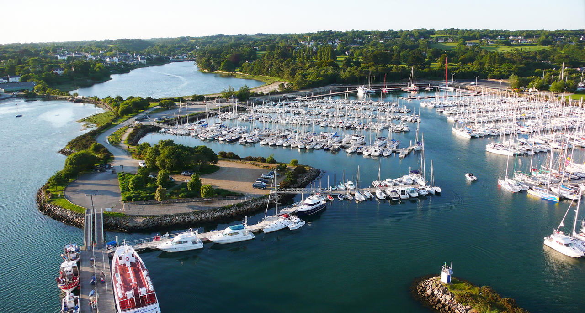

Finistère jusqu'au bout des rêves
Les lieux incontournables
10 lieux incontournables
Océanopolis-Brest
Océanopolis est un centre de culture scientifique consacré aux océans, situé à Brest. La forme du premier bâtiment,rappelle celle d'un crabe.
Le port du Guilvinec
Troisième port de France, après Boulogne-Sur-Mer et Lorient, le Guilvinec est considéré comme "le coeur de la pêche", il figure après tout comme le premier port français de la pêche.
Quimper

Chef-lieu du département, cité historique labellisé "ville d'art et d'histoire". Située aux confluences de l'Odet, la commune se divise en trois coeurs ancien : le quartier de Locmaria, et les villes des évêques et des ducs de Bretagne.
Concarneau
Pour faire un rebond dans le temps, rien de tel que de mettre les pieds à Concarneau et sa ville-close! Cette commune est un incontournable à visiter, pour les nombreux spectacles qu'elle offre.
Roscoff
Construite sur une presqu'île ouverte sur la Manche, la petite cité de caractère de Roscoff vaut le détour. De jolies maisons, une église de type gothique.Elle se situe à quelques dizaines de kilomètres des plages de granit rose.
Pont-Aven
Cette petite ville, blottie dans l'estuaire verdoyant de l'Aven, doit sa notoriété à l'école de peintre qui eut Gaugain pour maître.En flânant le long de la ria, il est aisé d'imaginer les artistes fascinés par la poésie des paysages et la luminosité du petit port.
Névez
La petite pénincule de Névez prend une très belle place entre Pont-Aven et Concarneau. Ce joli coin du Finistère recèle d'étonnantes maisons en "pierres debout", de paradisiaques plages.
La presqu'île de Crozon
Théâtre naturel entre terre et mer. Complètement intégrée au parc naturel régional de l'Armorique, la presqu'île de Crozon s'avance dans la mer d'iroise sans demi mesure.Composée de falaises, roches pointues et grandes vallées elle est un endroit spendide où la nature ne se laisse pas faire.
L'Archipel des Glénan

Situé à une dizaine de miles (=16 km) du continent, l'archipel des Glénan et son chapelet d'îlots offrent un spectacle féerique. Havre de paix éclatant de soleil au milieu de l'océan, les plages de sable blanc et fin et les eaux vert émeraude évoquent l'exotisme des îles lointaines. Sept îles principales enserrent le lagon.
La Forêt-Fouesnant
Face à l'océan, ce village breton très boisé est situé entre Bénodet et Concarneau. LE long de ses sentiers de balade et randonnée, on y découvre son vieux port, sa majestueuse église de granit, sa longue plage de sable fin, son glof et son port de plaisance (Port-la-Forêt).
